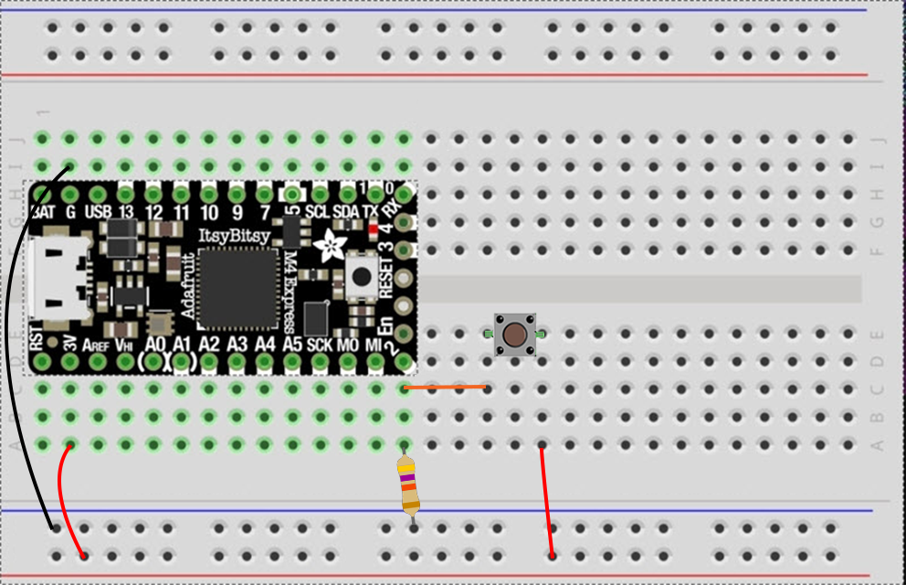
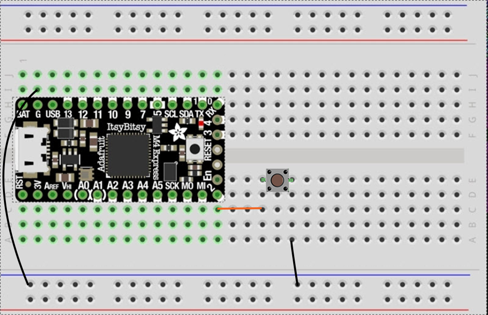

For this workshop, please collect the following:
Let's start with the Button example (File > Examples > Digital > Button). We'll modify this using both pullup and pulldown resistors, then use Arduino's internal INPUT_PULLUP
Conditional statements allow a program to make decisions about which lines of code run and which do not. They let actions take place only when a specific condition is met.
The test must be an expression that resolves to true or false. When the test expression evaluates to true, the code inside the { (left brace) and } (right brace) is run. If the expression is false, the code is ignored. Code inside a set of braces is called a block.
Conditionals can be embedded to include more than one test to control which lines of code will run.
The Button example uses this simple conditional statement:
if (buttonState == HIGH) {
// turn LED on:
digitalWrite(ledPin, HIGH);
} else {
// turn LED off:
digitalWrite(ledPin, LOW);
}
Build a circuit as described in the Button example (pushbutton attached to pin 2 from +3.3V and 10K resistor attached to pin 2 from ground):
The 10k resistor is acting as a PULLDOWN resistor, meaning that in the absence of a connection to +3.3V, pin 2 will report it's connection to ground (LOW). Essentially we've created a "path of some resistance" to ground. When the button is unpressed, the circuit will take this path. When the button is pressed, a "path of much less resistance" is created to +3.3V, so pin 2 will report HIGH. What happens if you remove the resistor? Try moving your hand around the circuit. The results will be unpredictable (floating input). Read more about pullup and pulldown resistors on SparkFun.
Luckily, many microcontrollers have built-in PULLUP resistors, which operate in the opposite way. Open the DigitalInputPullup example and rewire your circuit so that the button connects pin 2 to ground:
This example also allows us to see what's going on under the hood with the Serial monitor.
We can put conditional statement inside one another in order to see if multiple conditions have been met. A great tool in Arduino is the millis() function, which returns the number of milliseconds since the program began. We can make a simple time-based conditional statement:
if (millis() > 3000) {
// turn LED on:
digitalWrite(ledPin, HIGH);
} else {
// turn LED off:
digitalWrite(ledPin, LOW);
}
Now, we can nest that inside of our previous conditional statement:
if (buttonState == HIGH) {
if (millis() > 3000) {
// turn LED on:
digitalWrite(ledPin, HIGH);
} else {
// turn LED off:
digitalWrite(ledPin, LOW);
}
}
Logical operators are used to combine two or more relational expressions and to invert logical values. They allow for more than one condition to be considered simultaneously.
The logical operators are symbols for the logical concepts of AND (&&), OR (||), and NOT (!):
| Expression | Evaluation |
|---|---|
| true && true | true |
| true && false | false |
| false && true | false |
| true || true | true |
| true || false | true |
| false || false | false |
| !true | false |
| !false | true |
If we consider a = 8 and b = 12, we'd follow these steps in order to resolve the expression (a > 4) || (b < 24):
In this example, the expression "a > 15" is false, but "b < 30" is true. Because the OR operator requires only one part to be true in the entire expression, the code in the block will run. Try changing the code to logical AND instead of OR
const int ledPin = 13;
void setup(){
pinMode(ledPin, OUTPUT);
int a = 10;
int b = 20;
if ((a > 15) || (b < 30)) {
digitalWrite(ledPin, HIGH);
} else {
digitalWrite(ledPin, LOW);
}
}
We can modify our previous Button example such that both conditions are written in the same line.
const int buttonPin = 2; // the number of the pushbutton pin
const int ledPin = 13; // the number of the LED pin
// variables will change:
int buttonState = 0; // variable for reading the pushbutton status
void setup() {
// initialize the LED pin as an output:
pinMode(ledPin, OUTPUT);
// initialize the pushbutton pin as an input:
pinMode(buttonPin, INPUT);
}
void loop() {
// read the state of the pushbutton value:
buttonState = digitalRead(buttonPin);
// check if the pushbutton is pressed AND more than 3 seconds have passed.
// If both are true, the buttonState is HIGH:
if (buttonState == HIGH && millis() > 3000) {
// turn LED on:
digitalWrite(ledPin, HIGH);
}
} else {
digitalWrite(ledPin, LOW);
}
}